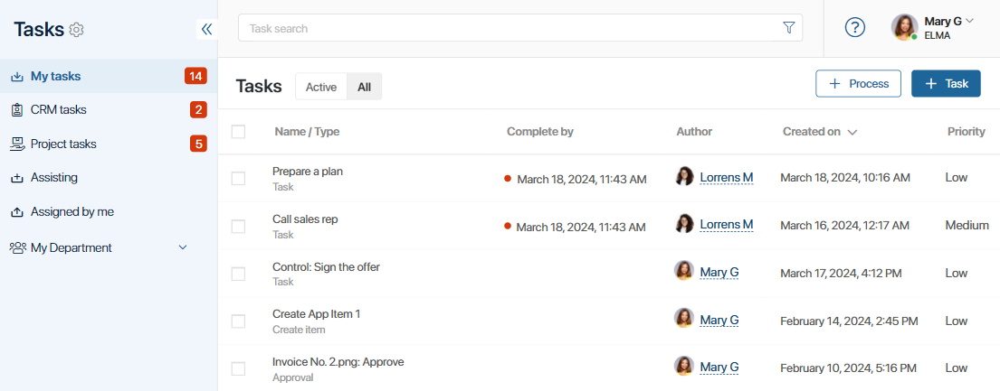
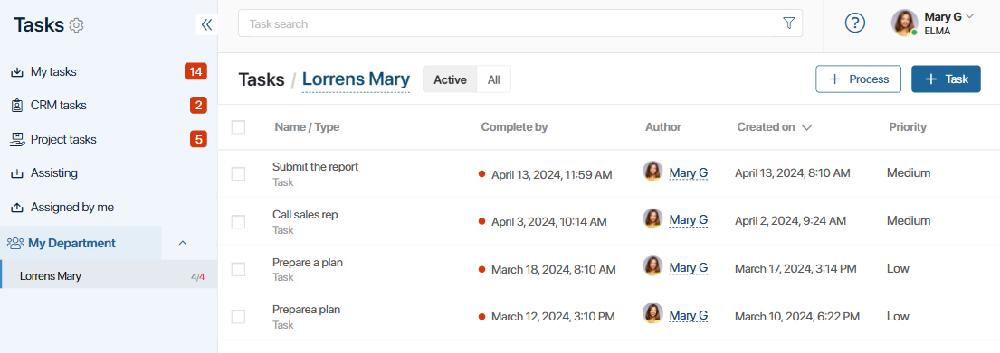

To make it easier to navigate and work with tasks, they are grouped by type:
- My tasks. Here you will see all the tasks for which you are responsible. If a colleague assigns you a new task, a red circle with a number will appear next to My tasks.
- CRM tasks. Tasks on deals, leads, and companies you are responsible for. This section is displayed only if the Show CRM tasks separately from others option is enabled in the user profile settings.
- Project tasks. This section is intended for working with project tasks. The system administrator can hide it for all users. You can also use personal task settings in the user profile to hide or show this group.
- Assisting. This section displays tasks that require your participation at certain stages. The counter shows the number of active tasks in which you are a participant.
- Assigned by me. All the tasks created by you are collected here.

If in the organizational chart you are assigned to the position of the department head, then in addition to your own tasks, you will see the tasks of your subordinates. Learn more in the My department article.

There are several options for displaying tasks. Choose the method that you find most convenient:
- Active. Use this option to view current tasks that require your attention.
- All. You will see a list of all active, completed, and canceled tasks, sorted by creation date. Closed tasks are crossed out.
- Completed. This option is only available for CRM tasks. It shows all the previously completed CRM tasks.
- Overdue. You can select this option only on the CRM tasks group page. Uncompleted tasks with expired deadlines are shown here.
Tasks on these pages are displayed as a table. Click on the columns to sort the tasks by subject, author, creation date, or due date.
CRM tasks can also be shown as a Kanban board or a Calendar. Read more in the CRM tasks article.
In the general list of tasks with the specified due date in the Complete by field, you will see dots of different colors: a black dot means that the task is not overdue, a yellow dot means that there are less than 24 hours left till the end of the due date, a red one appears next to overdue tasks.
Read more about the My tasks section in Task page.
The Assigned by me section is described in Task control options.
Found a typo? Select it and press Ctrl+Enter to send us feedback